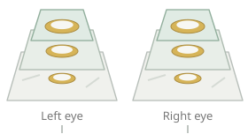
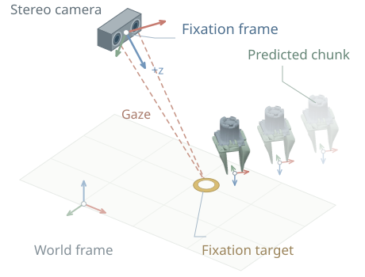
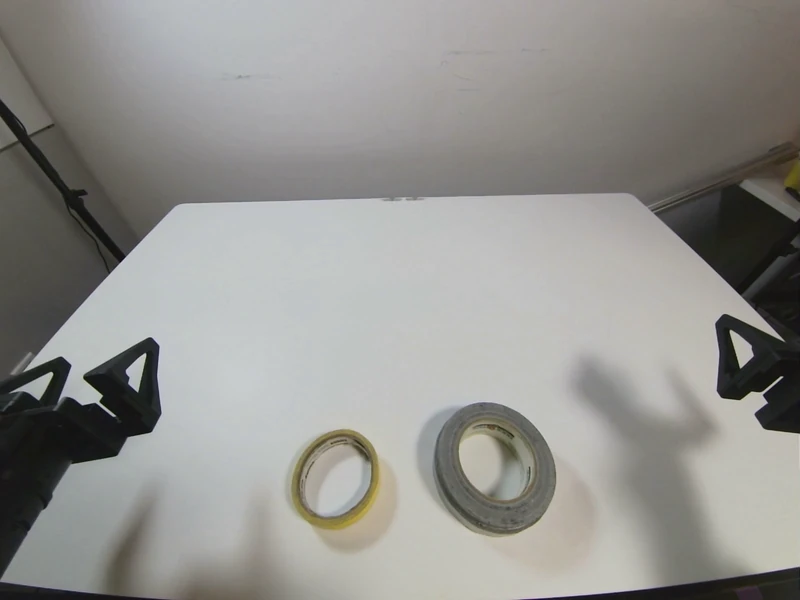
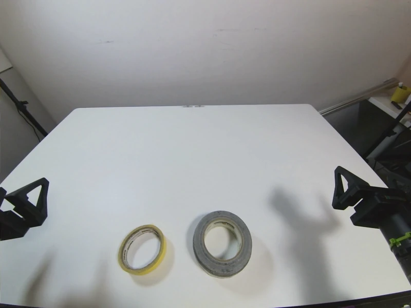
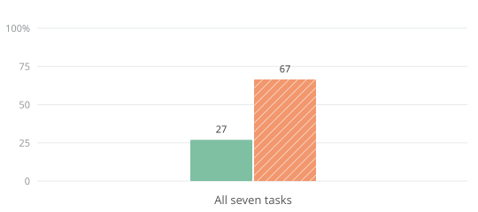
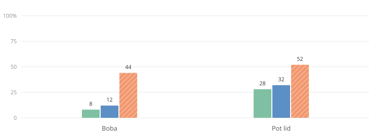
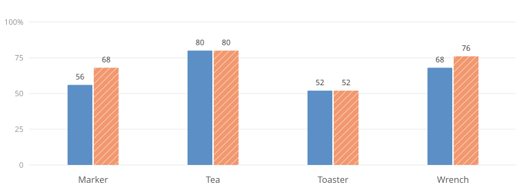
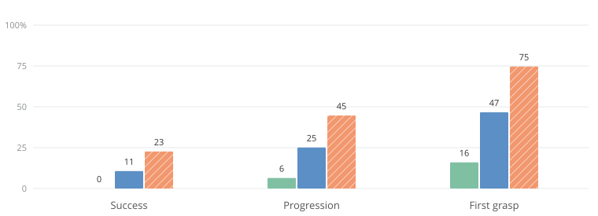
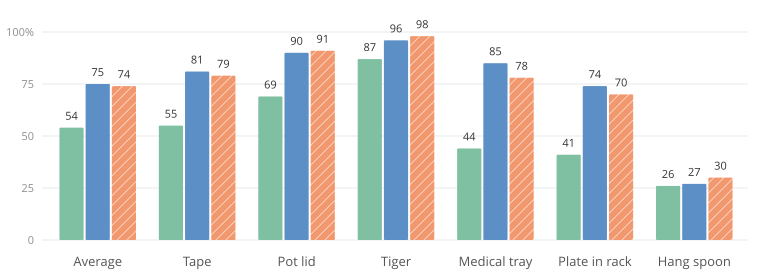
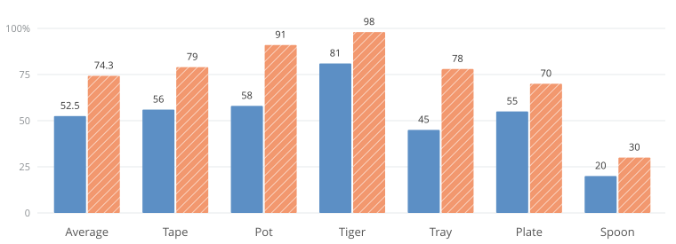

EyeRobot 2.0: Active Gaze for Precise Manipulation without Wrist Cameras
1UC Berkeley 2Amazon FAR 3Stanford University
∗Equal contribution, random order †Equal advising
Do robots need wrist cameras?
Behavior cloning systems today overwhelmingly rely on wrist cameras for fine-grained manipulation. Their high-resolution gripper-centric observations improve precision and spatial reasoning via a sort of physical attention where it matters, enabling much better performance than ego or exo-centric views alone. In this work we explore an alternative method of physical attention inspired by the human visual system; policies which use active gaze to look at what matters during task execution.
EyeRobot 2.0 can carry out precise, multi-step tasks like capping a marker, zipping a bag, or inserting a straw, all from a single ego-centric perspective. All policies below are single-task and trained from scratch on less than an hour of teleop data.
Stereo policies with active gaze
When most people think of active vision, they think of information seeking behaviors like moving your neck to get a better viewpoint. In this work we study a type of active vision more akin to information filtering. Given an already well-observable workspace, can active vision improve manipulation performance by focusing compute, attention, and representation capacity towards important parts of the scene? We borrow the biological term for this type of active vision: fixation.
The robot learns to coordinate its gaze with a two-stage reinforcement learning pipeline, no gaze demonstrations required! We first train a semantic gaze module, then use it to learn a gaze sequencing policy which directly optimizes BC accuracy as its reward. The eye motion shown here was exactly what the policy looked at during execution. Concentric rectangles illustrate the model's foveated1 image processing, which allocates high resolution image tokens towards the center.
How it works
A stereo policy centered on fixation
Our gripper policy combines foveated stereo views with the robot's state to predict a chunk of bimanual actions. Both gripper poses and predicted actions are expressed relative to fixation, while multi-scale image crops preserve detail at the center and context in the periphery. We use a standard ACT-style transformer decoder trained with a regression objective. We opt for regression for its training speed and suitability for our high-quality, non-diverse data.
Fixated stereo views

Gripper policy
Transformer decoder
Fixation-relative action chunk

Bimanual SE(3) poses + gripper positionsBut how does the robot know where to look? We learn this in two stages: first a gaze policy that fixates on a requested object, then a target selector that chooses what to look at during manipulation. Both learn through RL without gaze demonstrations.
Synthesizing gaze from offline real-world data
Stereo images

L
RSpherical projection
Rendered perspective
Loading the recorded stereo pair…
We synthesize gaze from recorded stereo video by projecting calibrated images onto spheres and rendering perspective views along new gaze directions. This geometric form of view synthesis reproduces how the scene would look as the eyes rotate, within the original cameras’ field of view. It lets us train gaze policies with RL on offline real-world data, using the rewards described below.
Learning goal-conditioned gaze
Gaze induced by conditioning on yellow vs gray tape. 3D visualization done with simulated data, but the policy is trained on real data. The red dot represents the current fixation point, which is controlled by the RL agent in 3D. Foveated viewpoints are rendered centered on this point.
We first train a per-task gaze controller that continuously servos the 2 eyes to fixate on a target object in 3D. The policy uses a transformer decoder architecture. It takes in foveated input views, the current eye proprioception, and a goal to look at, and outputs eye motion. We train it with PPO with a dense reward derived from extracting 3D object locations with foundation models and supervising with Euclidean error.
Sequencing gaze for manipulation
Once we have a gaze policy that can look at objects of interest, we need to choose what object to look at during each stage of the task. This is also learned via RL, using the BC-RL framework we proposed in EyeRobot. During this phase, we freeze the goal-conditioned gaze policy and train another RL agent to output a distribution over target objects to look at at each timestep. This target selector is co-trained with the BC gripper policy and rewarded with the BC policy's prediction accuracy.
Swipe to explore the diagram →
Proprio
Update
The framework only requires a computable offline error metric to compute reward. For generative models such as diffusion models, this could be action reconstruction error or a distributional measure such as sample agreement.
Take a look at the output probabilities from the target selector during execution here!
Compacting the data manifold with fixation
Loosely speaking, there's a few main ways to make a neural net better: 1) improve the architecture or optimization dynamics to better interpolate your data, 2) increase data manifold coverage by using more data, or 3) increase data manifold coverage by making the manifold itself more compact. Much of EyeRobot 2.0's design follows the third approach, reducing the complexity of the learning problem by representing manipulation relative to fixation2. This shares a motivation with equivariant learning: reducing variation by expressing observations and actions in a common frame, here defined by gaze.
Fixation-centric observations
By gazing at a point, EyeRobot 2.0 compacts the input image manifold by centering views on regions of interest. This is particularly noticable in pick and place tasks shown below.
Fixation-centric action frame
The same idea applies to the action space. In world coordinates, reaching for the same object at different locations produces different gripper trajectories. Expressing proprioception and actions relative to fixation brings these reaches into a more compact manifold, reducing the variation the policy needs to learn. This lets the same data more densely cover the relevant motions, rather than spreading it across different object locations. See action-frame ablation →
World frame
Relative to the robot
Fixation frame
Relative to the gaze direction
Point to a frame to locate the pose above
Experiments
Randomly sampled successful trials. Click here to browse all trial videos.
In total we evaluated over 1,000 real-world rollouts across all baselines and ablations for EyeRobot 2.0. We compare against two strong baselines that use the same policy architecture as EyeRobot 2.0 and are trained on the exact same demonstrations3. The first baseline uses the RGB stereo inputs directly ("No Gaze"), and the second uses one stereo image along with two wrist-mounted cameras ("Ego + Wrist"). Note that both baselines have a significant observability advantage, since EyeRobot 2.0's field of view is such that it cannot see the entire stereo image at once. Both baselines are provided a full coverage view of the table, and with wrist cameras two additional high-resolution viewpoints of the gripper.
 Marker
Marker
 Toaster
Toaster
 Wrench
Wrench
 Boba
Boba
 Tea
Tea
 Tape
Tape
 Pot
Pot
How does it compare to SOTA camera configs?
Active stereo >> passive stereo
Both policies start from the exact same source stereo images and are trained on the same demonstrations. By learning where to look within those images, EyeRobot 2.0 raises average success from 27% to 67%. Passive stereo struggles with spatial understanding; learning about 3D servoing is harder from a static perspective than from a fixation-centered perspective.

Passive stereo also lacks the localized resolution necessary for precise tasks, particularly noticeable in its near-zero performance on the marker task. Matching the resolution of EyeRobot 2.0’s fovea with uniform resolution would require over 10× the number of tokens.

Active stereo > wrist cameras under tool occlusion
When wrist cameras have a clear view, EyeRobot 2.0 matches the ego + wrist baseline. When they don’t, the gap widens. We intentionally collected tasks that are hard to see from the YAM’s wrist cameras because grasped objects block their views. In boba and pot lid, the wrist-camera policy must rely on its ego-centric view for useful information, and performance drops to roughly that of passive stereo.

Stereo gaze replay
Autonomous · 1× speed
Stereo gaze replay
Autonomous · 1× speed
Different wrist camera designs, such as dual cameras or fisheye views, can alleviate these problems, but cannot always maintain good observability. Teleoperators may also have to use unintuitive manipulation strategies to keep objects visible, which can harm data quality.
Active stereo = wrist cameras in unoccluded tasks
Using the same input images as passive stereo, active fixation closes the performance gap between wrist-free and wrist-camera policies. We evaluate marker, tea, toaster, and wrench with unobstructed wrist camera views. These tasks require precise grasping and tolerances, making clear wrist views particularly helpful. Even on these tasks, EyeRobot 2.0 matches or exceeds the performance of the wrist camera baseline.

Stereo gaze replay
Autonomous · 1× speed
Stereo gaze replay
Autonomous · 1× speed
Stereo gaze replay
Autonomous · 1× speed
Stereo gaze replay
Autonomous · 1× speed
Robustness to visual clutter
We evaluated 3 tasks with unseen distractor objects scattered throughout the workspace. All comparisons use the exact same object positions to ensure comparability. Notice how in these examples the wrist camera often reaches for the largest or most distinct object in its view. Once it begins reaching the policy cannot recover since the wrist camera loses sight of the target. In contrast, EyeRobot 2.0 reaches for the correct object when its gaze is correctly directed at it, and mostly misses grasps when it is looking in the wrong place. Decoupling vision and action could improve robustness in cluttered scenes by literally ignoring irrelevant information, as foveation does.
EyeRobot 2.0 has higher success and progression rates, as it can ignore distractor objects and focus on the correct objects.

See more evaluation successes and failures for each task here.
Simulated Eval
We found it extremely helpful for project development to build a MuJoCo twin of the YAM arms for high-volume, low-noise evaluations. Our goal here was not sim-to-real transfer, but rather a clean simulation-only benchmark that replicates as closely as possible the real world pipeline. We built a VR teleoperation platform using the same GELLO leader arms as real teleop, and designed 6 tasks by importing assets from SAM-3D. Task stage success is labeled based on programatic physics checks. We will open-source the full simulation setup, including the task environments and teleoperation, training, and evaluation code.
We train models on these simulated-only tasks with the exact same method, hyperparameters, camera parameters, and robot positions as real; the method does not leverage any simulated information besides what is available in real.

Ablations
Stereo and foveated vision
Ablating either stereo inputs or foveal inputs harms policy performance. Take a look at the sankey diagrams for a stage-by-stage breakdown; the failure cases of these ablations tend to cluster around stages requiring precision like capping the marker, or pulling out the toaster oven tray. Interestingly, boba performance was unaffected which we think was because the most precise phase of inserting the straw was performed near the stereo camera, making any gains from foveation less beneficial.

Read left to right: green flows show trials progressing through task stages; red branches show where they fail. Thicker flows represent more trials. Each stage’s percentage is the fraction of trials from the preceding stage that advance. Click a diagram to browse its trials.


Partial successes of ablations visualized as Sankey diagrams.
Gaze-centric actions
Instead of fixation-relative actions, we train and test models in simulation using world-frame SE(3) inputs and outputs. These also degrade in performance and interestingly roughly match the performance of the entirely non-fixating policy. This seems to suggest that without fixation-frame canonicalization, the model can learn proprioceptive shortcuts without looking at the image. One interpretation is that data coverage of the task in world-frame is sparser, leading to a worse policy.

Citation
If you use this work or find it helpful, please consider citing: (bibtex)
@article{2026eyerobot2,
title={{EyeRobot 2.0}: Active Gaze for Precise Manipulation without Wrist Cameras},
author={Hari, Kush* and Kerr, Justin* and Shivakumar, Nidhya and Mahapatra, Samarth and Sferrazza, Carmelo and Lei, Jiahui and Malik, Jitendra and Liu, C. Karen and Goldberg, Ken and Kanazawa, Angjoo},
journal={arXiv preprint arXiv:[ARXIV_ID]},
year={2026},
url={https://arxiv.org/abs/[ARXIV_ID]}
}